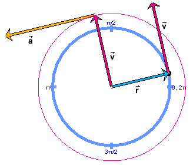

and velocity vector
and velocity vector  , the latter with its tail end attached to the tip of
. with its tail fixed at the center of the circle and
the acceleration vector
, the latter with its tail end attached to the tip of
. with its tail fixed at the center of the circle and
the acceleration vector  , with its tail end attached to the tip of .
, with its tail end attached to the tip of .Preparation: Kinematics/Velocity/Circular Motion/Explain It/
In this session, it will be explained why there is non-zero acceleration in uniform circular motion and why the direction of this acceleration is radial. Another word used to describe the direction of this acceleration is centripetal.

The explanation will be based on an analogy between acceleration and velocity that is illustrated in the image above. The image shows two pairs of vectors. All of the vectors are properties of the particle. The velocity vector is shown twice, in different locations.
and velocity vector , the latter with its tail end attached to the tip of
. with its tail fixed at the center of the circle and
the acceleration vector , with its tail end attached to the tip of .The explanation will be based on the fact that acceleration is related to velocity as velocity as related to position. Compare Pair 2 to Pair 1. The analogy between these two relationships is a consequence of the analogy between the definitions of acceleration and velocity. For a review of the definitions go to the links "Velocity" and "Acceleration" under Related Items.
The explanation assumes you understand why
the direction of the velocity vector at a given instant coincides with the direction in which the tip of the position vector is moving at that instant
which means that the velocity vector when attached to the tip of the position vector as in Pair 1 lies along the tangent to the particle's path at the given instant.
For a review of this relationship between the velocity and position vectors, go to Page 2 and carry out the Activities on Velocity suggested in the link under Related Items.